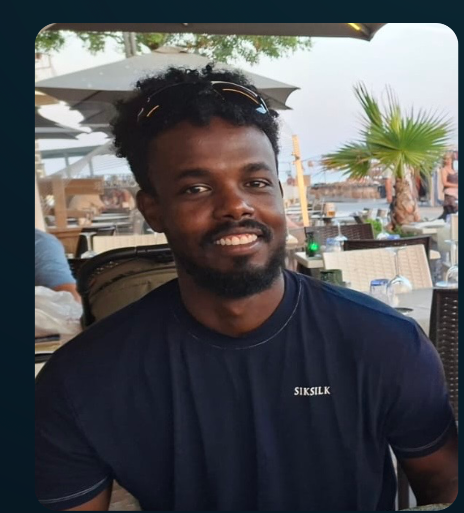

04/2025 – heute
Produktionsmitarbeiter · Probenvorbereitung
Stooss AG, Hedingen
Zuschneiden von Metallproben für die anschliessende Materialprüfung.
MEIN LEBEN. MEIN WEG.
Ich bin Abdi. Hier bringe ich zusammen, was mich begleitet: meine Arbeit, meine Projekte und die Dinge, die ich gerne tue. Ein persönliches Archiv, das mit mir wächst.

01 / MEIN WEG
Praktische Arbeit, neue Erfahrungen und stetiges Lernen. Mein beruflicher Werdegang an einem Ort.
Stooss AG, Hedingen
Zuschneiden von Metallproben für die anschliessende Materialprüfung.
Egli Zimmerei · Temporäreinsatz
Unterstützung der Fachkräfte bei Arbeiten in der Zimmerei und Vorfertigung.
Onyx Restaurant, Baar
Betreuung von Gästen und Aufnahme ihrer Anliegen, auch bei hoher Auslastung.
V-ZUG AG, Zug
Montage und Verdrahtung elektrotechnischer Komponenten für Haushaltsgeräte wie Mikrowellen, Backöfen und Waschmaschinen.
Einwohnergemeinde Cham
Berufliche Grundbildung abgeschlossen.
Vorlehre / Integrationsjahr · Zug
02 / AUSSERHALB DER ARBEIT
Sport, Technik und neue Perspektiven gehören genauso zu meiner Geschichte.
01 / SPORT
Bewegung und Freude am Spiel. Basketball gehört zu meinen Hobbys.
Persönliche Freizeitaktivität02 / SPORT
Draussen unterwegs sein und in Bewegung bleiben. Auch Velofahren gehört zu meinen Hobbys.
Persönliche Freizeitaktivität03 / KREATIVE PROJEKTE
Hier geht es weiter: zu Aufnahmen, Experimenten und persönlichen Projekten.
SOMMER 2017 / PERSÖNLICHE ENTWICKLUNG
10.–22. Juli 2017 · Schweiz
Pestalozzi Children’s Foundation
Im Sommer 2017 nahm ich an einem interkulturellen Austauschprojekt mit 165 Jugendlichen aus Bosnien und Herzegowina, Mazedonien, Moldau, Serbien, der Schweiz und Russland teil. Im Mittelpunkt standen Identität und persönliche Entwicklung, Kinderrechte und der interkulturelle Austausch.
Eine persönliche Erfahrung aus meiner Jugend – festgehalten in meinem digitalen Archiv.
Das PDF wird getrennt von der öffentlichen Website aufbewahrt. Füge deine private Kopie zur lokalen Sammlung hinzu, um sie in diesem Browser aufzurufen.
DROHNENFLIEGEN & KREATIVE PROJEKTE
Technik entdecken und die Welt von oben sehen: meine Drohnenaufnahmen, visuellen Geschichten und persönlichen Lernprojekte. Drohnenausweise: A1/A3 und A2.
Drohnen- & Kreativprojekte entdecken ↗04 / VON PAPIER ZU DIGITAL
Zwischenzeugnisse, Arbeitszeugnisse und weitere Unterlagen gehören zu meinem persönlichen Archiv.
Die öffentliche Website enthält keine Zeugnisse. In der lokalen Sammlung kann ich Unterlagen auf diesem Gerät ordnen, ohne sie hochzuladen.
Lokale Sammlung öffnen ↗Nur in diesem Browser gespeichert · kein Online-Backup · keine verschlüsselte Ablage
Noch keine Dokumente in dieser Website enthalten.
DER ROTE FADEN
Der passende Lebenslauf – im vertrauten Design, mit Verbindung zu diesem Archiv.